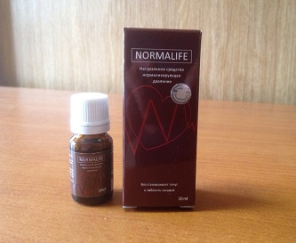
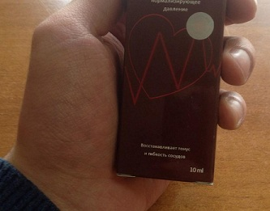

Гипертония и скачки давления - останутся в прошлом!
Инфаркт с инсультами - причина почти 70% от всех смертей в мире. Семеро из десяти человек умирают из-за закупорки артерий сердца или мозга. Практически во всех случаях причина такого страшного конца одна - скачки давления из-за гипертонии. "Тихий убийца", как ее окрестили кардиологи, ежегодно забирает миллионы жизней.
Бокерия Лео Антонович
Советский и российский врач-кардиохирург, изобретатель, организатор
медицинской науки, педагог, профессор. Академик РАН и РАМН, Член
Президиума РАМН. Главный кардиохирург Минздрава РФ. Директор НЦССХ им.
А. Н. Бакулева с 1994 года. Президент Общероссийской общественной
организации «Лига здоровья нации». Член Общественной палаты Российской
Федерации.
Стаж работы - 48 лет
О проблеме:
Ни для кого не секрет, что сердечно-сосудистые заболевания - это мировые лидеры среди болезней по количеству жизней, которые они забирают. Так вот, гипертония выступает в качестве основной причины всех инфарктов и инсультов, которые записываются на счёт сердечно-сосудистых болезней. Безусловно, другие заболевания тоже оказывают давление на организм, но именно гипертония и вызываемые ею перепады давления выступает тем спусковым крючком, которые отправляет человека на тот свет.
Если говорить о конкретных значениях, то приблизительно в 77-78% смертельных "естественных" исходов, их причиной является как раз гипертония. В абсолютных цифрах, это около 1,54 миллиона смертей в 2015 году и 1,49 миллиона в 2014. То есть, числа действительно колоссальные и пугающие. До недавнего времени о масштабах бедствия никто не подозревал, потому что не велось детальной статистики и анализа. За промежуток с 2011 по 2015 мы собрали громадный массив данных, которые привёл к совсем неутешительным выводам.
Скачки давления каждый раз вызывают колоссальные перегрузки сердечной мышцы, которые рано или поздно заканчиваются остановкой сердца. Грубо говоря, каждый раз повышенное давление приводит к перегрузке сердца в 10-20 раз. Если говорить о финале развития болезни, то гипертония всегда приводит к одному и тому же итогу - к смерти. Впрочем, если выделять её именно как ключевую причину смерти человека, то это происходит в 89% случаев. То есть, в 89% ситуаций гипертония завершается инфарктом или инсультом и смертью человека. При этом, если ещё 20-30 лет назад у больных с таким диагнозом был неплохой шанс прожить 10-20 лет, то сейчас приблизительно 2/3 (две трети) пациентов умирает в течение первых пяти лет развития болезни.
Особенно страшен тот факт, что масса людей вообще не подозревают, что у них гипертония. И они упускают возможность что-то исправить, просто обрекая себя на гибель.
Вот по этим симптомам вы можете определить, что у вас гипертония:
- Головная боль
- Учащение сердцебиения
- Черные точки перед глазами (мушки)
- Апатия, раздражительность, сонливость
- Нечеткое зрение
- Потливость
- Хроническая усталость
- Отеки лица
- Онемение и озноб пальцев
- Скачки давления
Даже один из этих симптомов должен заставить задуматься. А если их два, то не сомневайтесь - у вас есть гипертония. К слову, согласно статистике Минздрава, 67% гипертоников вообще не подозревают, что они больны.
Каким образом можно обезопасить себя и побороть болезнь?
Прежде всего, нужно понимать, что стоит отказаться от массы своих вредных привычек, особенно, от курения и алкоголя. Это только усугубляет ситуацию с артериальным давлением. Следующий факт - сбивать давление можно и нужно, иначе никак. Но это никак не лечит саму болезнь. Более того, если перебрать с лекарствами и получить резкую просадку давления, это может вызвать крайне негативную реакцию организма вплоть до того же самого инфаркта. Это не говоря о том, что таблетки создают крайне высокую нагрузку на печень.
Собственно, на данный момент, единственное лекарство, которое официально рекомендуется Минздравом для лечения гипертонии и оно же используется кардиологами в их работе - это Normalife. Его разработка началась ещё несколько лет назад и завершилась буквально недавно. Созданием препарата занималась команда специалистов из Европейского общества кардиологов, работавшая в тесной связке с практикующими кардиологами всей Европы и некоторых стран СНГ. В итоге получилось уникальное по своим параметрам средство, надёжно "погашающее" гипертонию и ликвидирующую её причину, в отличие от всех иных препаратов.
В начале 2017 года, в Научно-практическом центре кардиологии и кардиохирургии, входящем в состав Государственного научно-исследовательского центра профилактической медицины, успешно закончены клинические испытания препарата нового поколения - Normalife, созданного для борьбы с гипертонией. Пресс служба института обнародовала следующее:
1. Эффективность Normalife, подсчитанная по стандартной методике
(количество выздоровевших к общему числу больных в группе из 100
человек, проходивших курс лечения) составила:
– Нормализация давления – 97%
– Устранение тромбоза вен – 80%.
– Устранение сильного сердцебиения – 99%
– Избавление от головной боли – 100%
– Прибавление бодрости днем, улучшение сна ночью – 97%.
*Под выздоровлением в данном случае понимается избавление от всех симптомов и отсутствие рецидива в течение 6 месяцев.
2. Нежелательных побочных эффектов, в том числе аллергических реакций не выявлено.
3. Normalife признан ведущим препаратом в борьбе с гипертонией.
Бойцов Сергей Анатольевич
Директор Научно-практического центра кардиологии и кардиохирургии.
Вице-президент, профессор, директор ФГБУ "ГНИЦ ПМ" Минздравсоцразвития
РФ, доктор медицинских наук, профессор ФГБУ «Государственный
научно-исследовательский центр профилактической медицины» МЗиСР.
Стаж работы - 29 лет
Сотрудниками нашего института было установлено, что препарат воздействует на причину заболевания, благодаря чему появляется возможность полностью избавиться от гипертонии. Симптоматику он убирает и вовсе в первые шесть часов после применения, за счет своего активного компонента. Это даёт возможность уже сразу после начала курса, что называется, вздохнуть полной грудью.
Тонус сосудов полностью восстанавливается после одного курса применения. При этом Normalife эффективен на любой стадии гипертонии. Лекарство естественно прошло клинические испытания. Я хочу отметить, что эффективность, продемонстрированная в процессе испытаний, даст фору любому зарубежному средству. Лучший результат у западных лекарств - 20-21% вылеченных. В нашем случае, речь идёт о 75-77% вылеченных. У всех остальных ситуация просто стабилизируется. То есть, сама гипертония в зачаточном состоянии сохраняется (проблема с тонусом сосудов). Но при этом у вас не скачет давление и чувствуете вы себя просто великолепно.
Помимо России и стран СНГ, Normalife прошёл клинические испытания в Швейцарии, Германии, Латвии, Италии которые также подтвердили его эффективность. Сейчас на Западе присутствует колоссальный спрос на этот препарат. Но согласно специальному распоряжению Минздрава, лекарство поставляется в отдельные города лишь небольшими партиями, что связано с малыми объёмами производства, не готового к такому уровню спроса.
На данный момент производитель уже строит новые мощности, которые позволят увеличить объём в несколько раз. Поэтому, пока он не пытался выйти на прилавки аптечных сетей, потому что туда просто нечего отправлять - всё раскупается сразу же на производстве медицинскими компаниями. Более того - до недавнего момента в розницу лекарство было приобрести и вовсе невозможно, весь свободный объём уходил в специализированные медицинские центры и клиники.
В настоящее время оригинальный препарат Normalife можно заказать через официальный сайт производителя.

Тоже покупала, для своей бабушки - у неё вечно с давлением проблемы. Сама-то она вряд-ли когда доберется до того, чтобы в интернете что-то заказать, пусть даже и по телефону. Поэтому я сама. Помогло надо сказать на все 100%, хотя проблемы были давние и глобальные - она на лекарствах очень сильно сидела несколько лет. 

Я читала в каком-то медицинском журнале об этом средстве. Экспертная статья по моему была, как раз Лео Бокерии, а тут на тебе...

Я тоже где-то слышала краем уха. Кто-то из знакомых что-ли заказывал для себя. У самой проблемы с давлением уже второй год, сейчас как прочла - аж не по себе стало. Оформлю-ка заказ пожалуй, попробую в деле.


Чувствую себя после использования намного лучше, как будто даже помолодела. На внешности это очень сказалось. Все стало моложе и здоровее.

Это просто чудо, да. Normalife я сразу заказал, как о нем услышал. Жаль только не знал об этом лет 5 назад, многие годы страдал от давления, но зато сейчас я жив-здоров! Открыт миру! Большое спасибо.


Скупой платит дважды. Нашел информацию о Normalife, а заказывать не стал. Решил купить на просторах интернета, подешевле. Нашел какую-то паленую партию. В итоге отругал себя и заказал на официальном сайте. Странно, но Normalife пришел моментально, что для нашей почты крайне необычно. Спасибо Вам.
Первый раз услышала о препарате месяца три назад и сразу же заказала. С давлением проблемы жутчайшие были. А тут после первого же дня приема - ни раз не подскочило. Наслаждаюсь жизнью просто.